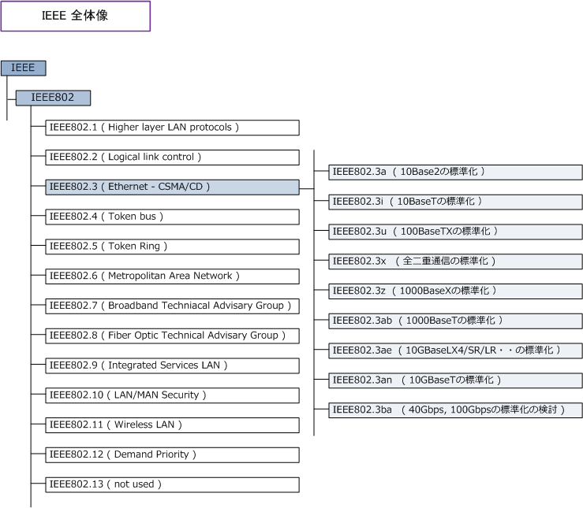
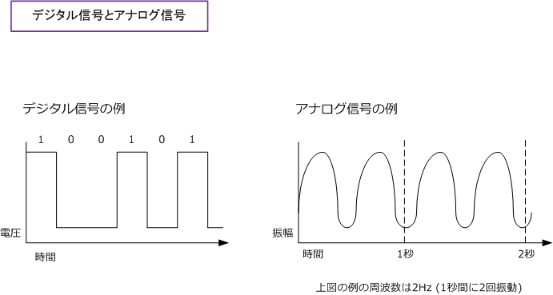

Ethernet LAN
イーサネット (Ethernet) とは
イーサネットはコンピュータネットワークの規格のひとつであり、現在最も使用されているLANの規格。 現在のLANにおけるコンピュータ通信では、イーサネットとTCP/IPの組み合わせが一般的だと言えます。 つまりイーサネットが主に物理規格を取り決めて、TCP/IPが通信内容を取り決めているということです。
イーサネットの歴史
イーサネットの原点は、ハワイ諸島の島々を4800bpsの無線ネットワークで結ぶALOHAシステムと言われ ています。そして、ALOHAシステムに基づき1973年にゼロックスの研究員であるロバート メトカーフを 中心にイーサネットの原型が開発されました。その後、ゼロックス（Xerox）はDECとIntelを開発に加えて 3社の頭文字をとりDIX仕様を制定。1980年にDIX仕様をEthernet1.0規格として、IEEE802 委員会に提出。
| 年 | イーサネットの歴史 |
|---|---|
| 1970 | ハワイ大学ノーマン ・ エブラムソンにより、ALOHAシステムにより無線ネットワークの開発 |
| 1973 | ゼロックス研究員ロバート ・ メトカーフにより、ALOHAシステムに基づいてイーサネットの開発 |
| 1980 | DEC, Intel, Xeroxの3社共同で開発したDIX仕様をEthernet?T規格としてIEEE802.3に提出・公開 |
| 1982 | DIX仕様のEthernet ?U( version 2.0) を公開 |
| 1983 | IEEE802.3 CSMA/CDを規格化 ( Ethernet ?Uをベース ) |
| 1983 | IEEE802.3による10Base5の標準化 |
| 1988 | IEEE802.3aによる10Base2の標準化 |
| 1990 | IEEE802.3iによる10Base-Tの標準化 |
| 1995 | IEEE802.3uによる100Base-TXの標準化 |
| 1997 | IEEE802.3xによる全二重通信の標準化 |
| 1998 | IEEE802.3zによる1000Base-Xの標準化 |
| 1999 | IEEE802.3abによる1000Base-Tの標準化 |
| 2002 | IEEE802.3aeによる10GBase-LX4 / SR / LR / ER、及び10GBaseSW / LW / EW の標準化 |
| 2006 | IEEE802.3anによる10GBase-Tの標準化 |
| 2008 | IEEE802.3baにより40Gbpsイーサネットと100Gbpsイーサネットの標準化の検討開始 |
1980年代からトークンリングやFDDI等のLAN規格などが生まれましたが、規格を公開して多くの賛同者を 得られたイーサネットがLAN規格の代名詞となり、現在、イーサネットLANを一般的にLANと呼んでいます。 ※ 現在普及している「イーサネットLAN」は Ethernet2.0 規格を元に、1983年にIEEE802.3 CSMA/CDとして策定された仕様です。
IEEEの全体像
IEEEとは電気、電子分野における世界最大の学会。そして、IEEE802とはLAN規格を定めている委員会。 そして、IEEE802.3はイーサネットLANに関する規格（またはワーキンググループ）。全体像は以下です。

帯域幅（ bandwidth ）とは
帯域幅には、デジタルとアナログの2種類があります。アナログ通信の場合は、使用する最低の周波数と 最高の周波数の差のことを意味します。デジタル通信の場合は、最大の伝送速度のことを指しています。 コンピュータ通信の場合は「0」と「1」のビット（bit）のデジタル情報のやりとりを行います。1995年に 規格化されたFastEthernetでは最大伝送速度である「100Mbps」がイーサネットの帯域幅を指しています。
デジタル通信の場合、帯域幅の基本単位を bps（bit per second = ビット/秒）で表現しています。つまり、 100Mbpsの帯域幅のFastEthernetでは1秒間に100Mビット（= 12.5Mバイト）の情報を転送できるのです。
| デジタル通信での帯域幅の単位 | ||
|---|---|---|
| 単位 | 一般的な省略表記 | その他の表記 |
| ビット/秒 | bps | 1秒に1ビット ( bit per second ) |
| キロビット/秒 | Kbps | 1000bps |
| メガビット/秒 | Mbps | 1000Kbps |
| ギガビット/秒 | Gbps | 1000Mbps |
| アナログ通信での帯域幅の単位 | ||
|---|---|---|
| 単位 | 一般的な省略表記 | その他の表記 |
| ヘルツ | Hz | 1秒に１回 |
| キロヘルツ | KHz | 1000Hz |
| メガヘルツ | MHz | 1000KHz |
| ギガヘルツ | GHz | 1000MHz |
